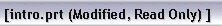

当您修改了一个部件，文本“修改的”将出现在标题栏中，表示尚未保存这个更改。

保存部件后，状态行显示部件文件已保存，并且“修改的”三个字将从标题栏上消失。
文件→另存为允许您使用另一个名称来保存当前部件到另一个目录。
当选择另存为后，可以在文件选择对话框中指定新的名称和位置。
名称在当前目录或者数据库中必须是唯一的，如果指定一个已存在的名称，将会出现一个错误信息。
|
注释 |
选择文件→保存所有来保存所有打开的(即已加载的)部件文件。 |